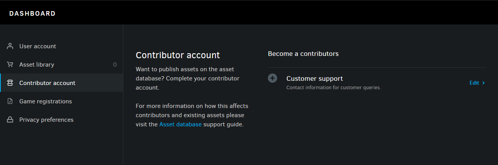
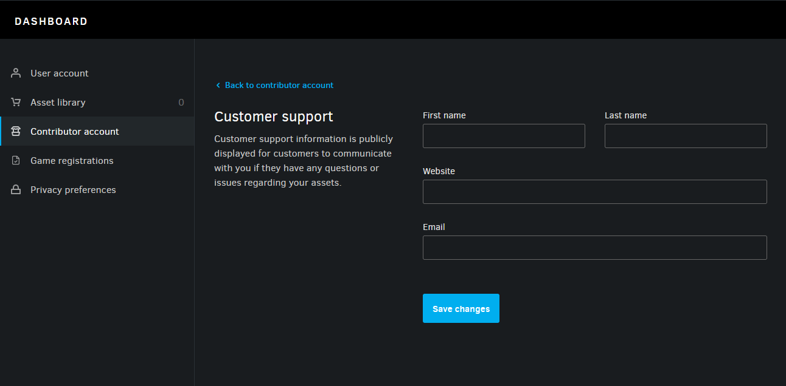
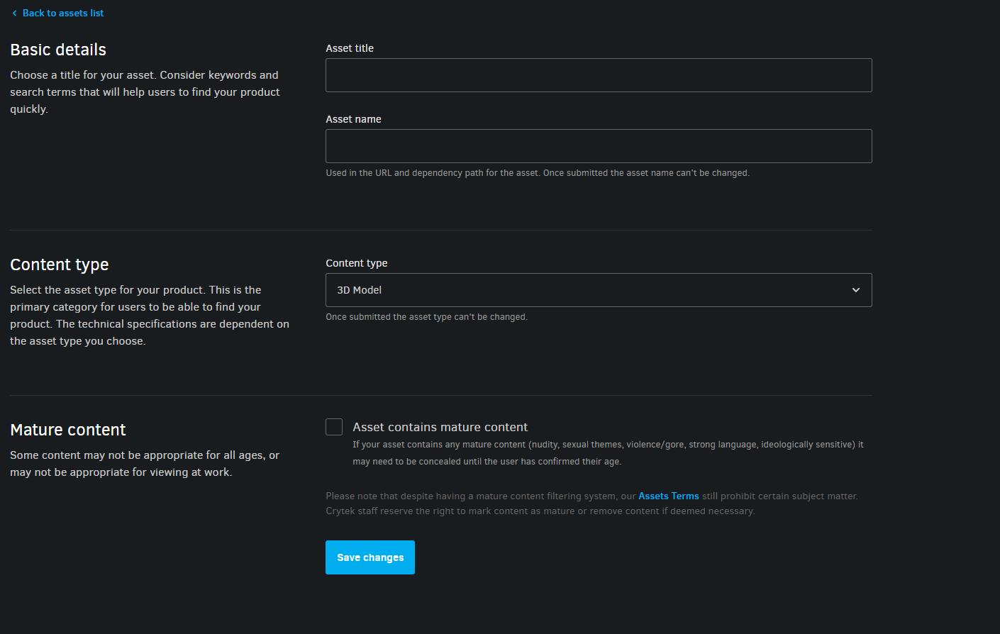
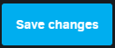
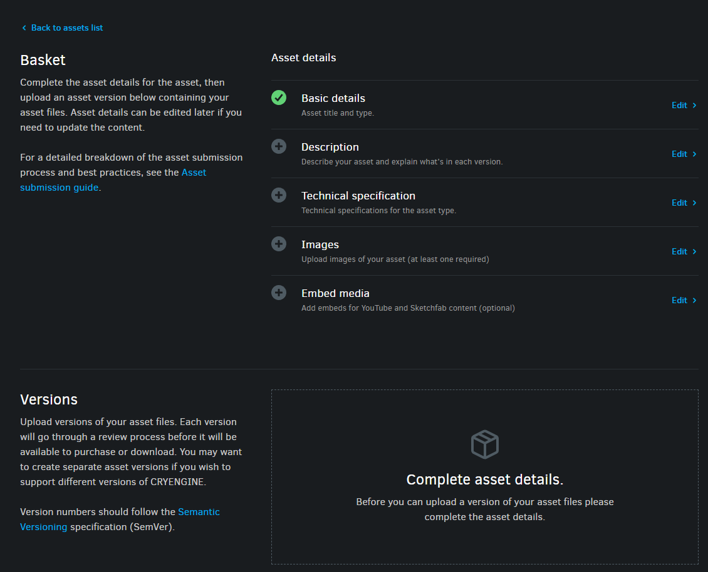
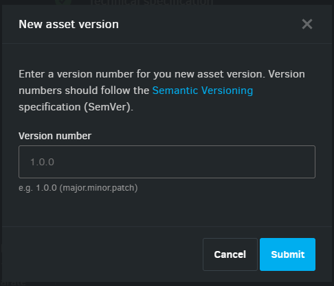
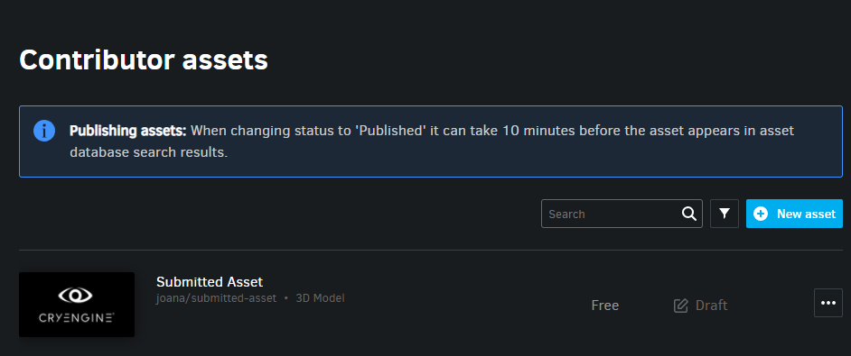
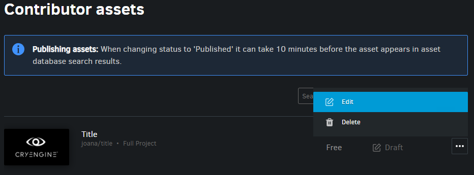
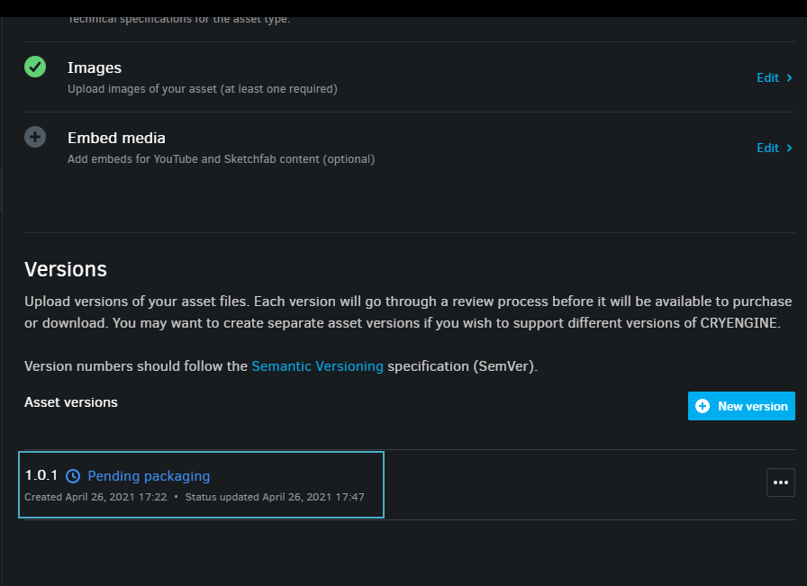

Если вы хотите опубликовать свои собственные ресурсы в базе данных ресурсов, чтобы их могли использовать другие разработчики CRYENGINE в своих проектах, вам сначала необходимо настроить учетную запись участника.
Настройка учетной записи участника
- Откройте Активы участников вкладку в панели запуска CRYENGINE и нажмите кнопку Аккаунт автора гиперссылка в центре библиотеки ресурсов участников.

Пустая библиотека ресурсов участников прежде чем стать участником Вы будете перенаправлены на страницу учетной записи участника на панели управления пользователя на сайт CRYENGINE; если вы еще этого не сделали, войдите в систему, используя учетные данные своей учетной записи CRYENGINE, и прочитайте Руководство для участников прежде чем настраивать информацию о поддержке клиентов.


Настройка учетной записи участника
После того как вы настроите свою учетную запись участника, Активы участников После обновления вкладка в панели запуска CRYENGINE должна выглядеть следующим образом:

Пустой Автор Библиотека ресурсов после того, как стал участником
Отправка актива
- В библиотеке ресурсов участников нажмите кнопку, чтобы начать процесс отправки ресурсов. Откроется следующая форма:

Форма подачи актива Введите основные данные вашего актива (имя, тип, возрастные ограничения) и нажмите

Название актива — имя актива, отображаемого в базе данных активов CRYENGINE; тот Имя актива с другой стороны, используется в URL актива.
Затем вы будете перенаправлены на панель управления, изображенную ниже; завершить Описание, технические характеристики, изображения и Встроить медиа разделы под Детали активов с запрошенной информацией.
Пожалуйста, также обратитесь к Руководство по отправке активов для ознакомления с лучшими практиками и обзором процесса подачи активов.

Детали активов- Как только Детали активов раздел завершен,
кнопка должна появиться в Версии раздел ниже на панели управления, как показано:
Раздел «Версии» - Нажмите на нее и введите номер версии вашего актива в поле Новая версия актива диалог, который открывается; щелкнуть Отправить продолжить.

Новая версия актива - На следующей панели управления загрузите папку с ресурсами и нажмите Отправить версию чтобы завершить процесс.
Загрузить объект - В случае успеха должно появиться подтверждающее сообщение, а актив должен быть указан в списке Активы участников библиотека.

Отправленные ресурсы перечислены в библиотеке ресурсов участников.
Проверка статуса отправленных активов
После загрузки версии вашего актива вы можете проверить ее статус следующим образом:
- Откройте лаунчер Активы участников вкладку, нажмите кнопку
рядом со списком активов и выберите значок Редактировать вариант. 
Настройка отправленного актива На следующей информационной панели статус отправки актива должен быть виден в Версии раздел, как показано:

Статус актива
Это различные этапы подачи пакета активов:Статус Описание Новый Создана новая версия актива; ждем загрузки файлов. Загрузка Ожидается загрузка; если ты отказался от Загрузить панель управления активами, закрыли окно запуска или потеряли соединение, вам придется перезапустить процесс загрузки.
Загрузка не удалась Во время загрузки что-то пошло не так. Ожидается упаковка Файлы загружены и поставлены в очередь на упаковку. Упаковка Файлы упаковываются. Упаковка не удалась Возникла проблема с процессом упаковки. Ожидает рассмотрения Пакет ожидает рассмотрения командой CRYENGINE. Обзор Пакет в настоящее время рассматривается командой CRYENGINE. Подтверждено Пакет прошел проверку, но еще не опубликован в базе данных активов CRYENGINE. Публикация Пакет ожидает публикации в базе данных ресурсов CRYENGINE. Публикация не удалась Возникла проблема с процессом публикации. Опубликовано Пакет опубликован в базе данных активов CRYENGINE. Отклонено Пакет не прошел проверку. Отменено Отправка версии отменена пользователем.
Вы можете отменить отправку, щелкнув рядом с вашим пакетом активов в Версии раздел и выбрав Отменить отправку из меню.
Отменить отправку